對話視窗
訊息視窗
純粹跳出對話視窗顯示一下訊息，頂多搭配圖示方便使用者判斷訊息，有五種可用…
緊急通報
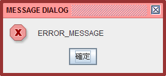
注意事項
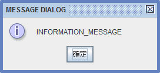
警告標語
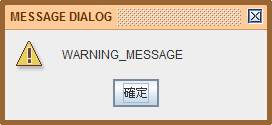
警訊提報
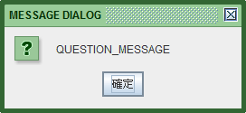
一般訊息
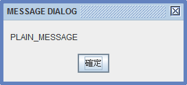
確認視窗
跳出詢問用的對話視窗，可根據傳回值，判斷使用者的回覆：
JOptionPane.YES_OPTION
JOptionPane.NO_OPTION
JOptionPane.CANCEL_OPTION
JOptionPane.OK_OPTION
JOptionPane.CLOSED_OPTION
依按鈕的配置，總共有四種…
OK
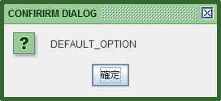
YES / NO
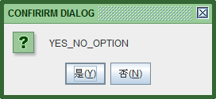
YES / NO / CANCEL
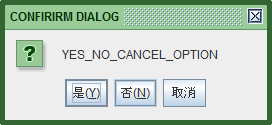
YES / CANCEL
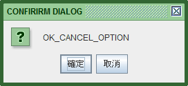
補充範例
例如還蠻常用的情況是，用詢問視窗確認使用者是否真的要關閉：
輸入視窗
標準型（可設定標題列與圖示）
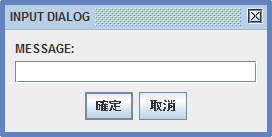
速用型（可輸入預設值）
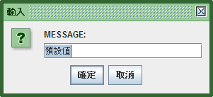
檔案視窗
雖然有兩種方式可以呼叫不一樣的對話視窗，但其實只有標題列文字不一樣而已，取得檔案的行為一模一樣。為了方便研究，依然分開寫兩個範例如下：
儲存視窗
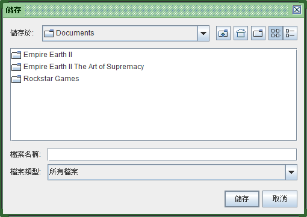
開啟視窗
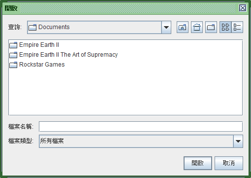
可選取多個檔案
指定預設路徑
你可以預設檔案對話視窗的一開始所在的資料夾位置，如下介紹的是使用者的桌面位置：
篩選副檔名
檔案對話視窗通常可以篩選副檔名，底下範例介紹如何為檔案對話視窗增加只篩選出 XML 副檔名的功能。
XMLFileFilter.java
XMLFileChooser.java
Main.java
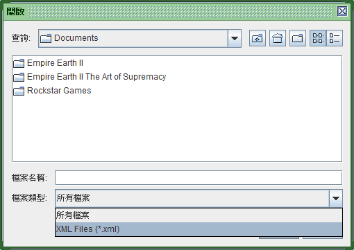
色彩選擇器
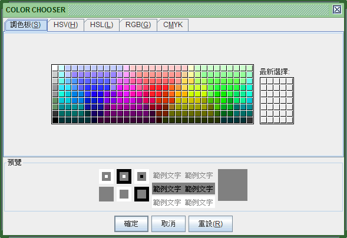